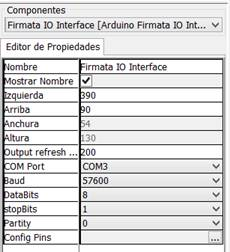
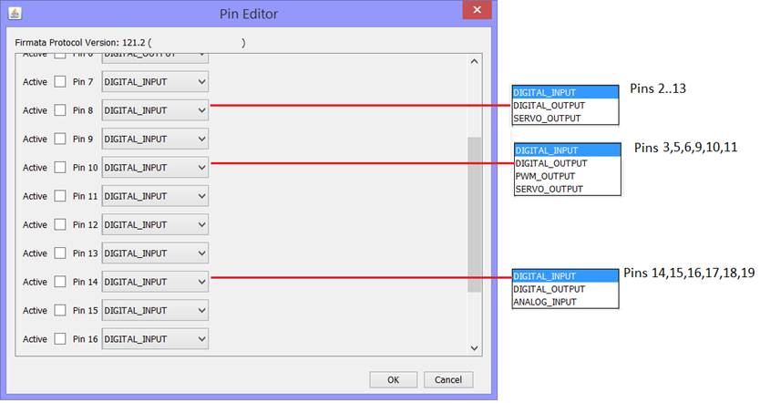
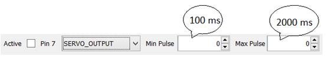
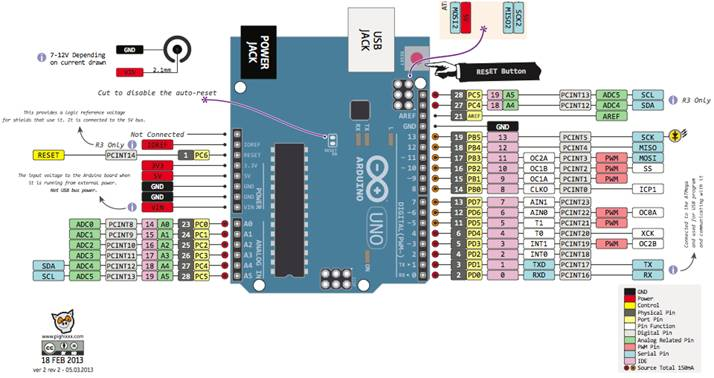
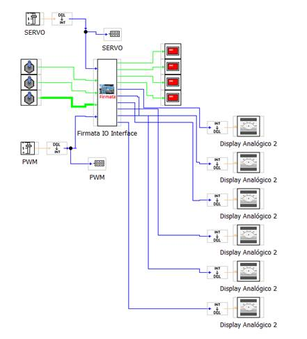
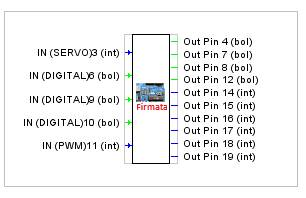
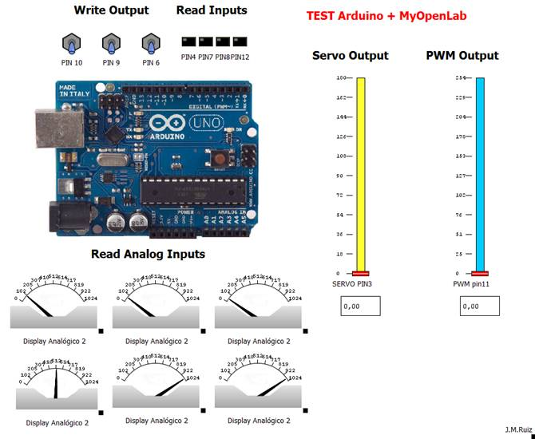

Comunicación
de Arduino con MyOpenLab a través de protocolo Firmata.
|
 |
Parámetros de
Configuración: COM Port:
Selección Puerto de conexión Baud:
Velocidad de comunicación con el puerto (por defecto 57600) Config Pins:
Configuración de pines (ver imagen de pantalla) |
|
|
Selección de modo de
trabajo de los pines de Arduino: Para
la selección de los Pines en la tarjeta Arduino es preciso que esté conectado
Arduino al Ordenador.  |
||
|
Para
la configuración de los servos los parámetros de tiempo más normales serían:  |
||
|
Descripción
detallada de pineado de ARDUINO Uno  |
||
|
El
siguiente es un ejemplo genérico de control de la tarjeta Arduino Uno con
este bloque de librería. Panel de CIRCUITO  Configuración de Pines  Panel FRONTAL  |
||
Online
Help : http://myopenlab.de/startseite/specials/firmata.html